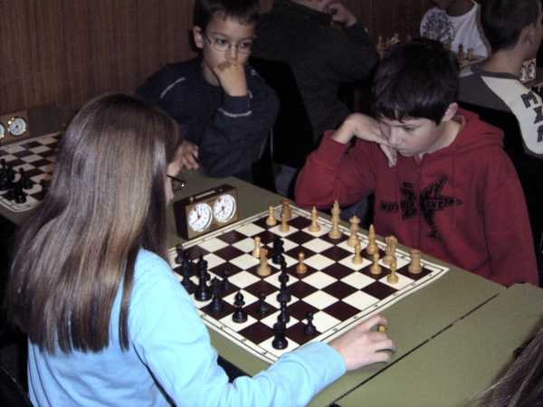
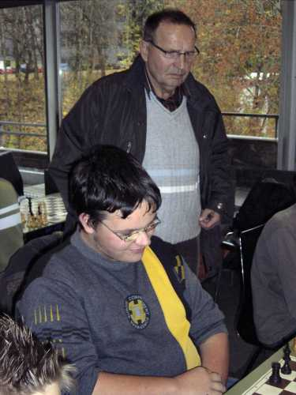
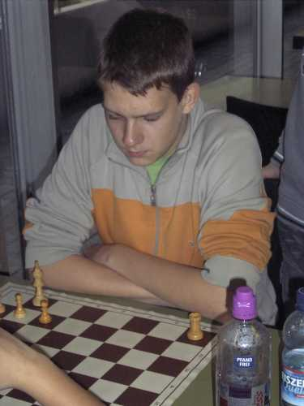
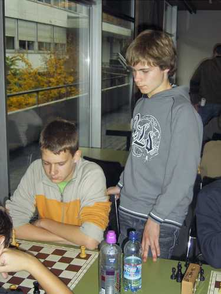

Wieder mal Turnieratmosphäre in Waldshut. Diesmal in der Realschule.

Jochen kriegt gleich zu Beginn einen "Brocken" vorgesetzt.

Nicolas sammelt eifrig Turniererfahrung.

Beim vereinsinternen Duell: Rafael und Johannes.

Immer schwierig, gegen zwei Damen - Daniel bei der Arbeit.

Ein Punkt fehlte Daniel am Ende für den ersten Platz.

Aber zweiter ist doch auch ein prächtiges Ergebnis.

Jojo hirnt.

Jochen freut sich ob seines glücklichen Sieges im letzten Spiel.
Co-Betreuer Hermann Knütel freut sich im Hintergrund mit.

"Ein Türmlein steht alleine ganz still und stumm" -
"Wohin damit? " fragt sich Rafi.

Vielleicht kann Nicolas einen Rat geben...

Schwieriges Spiel: Tobias von der Schach AG Bad Säckingen (links) gegen
einen der Favoriten, Thomas vom SC Brombach.